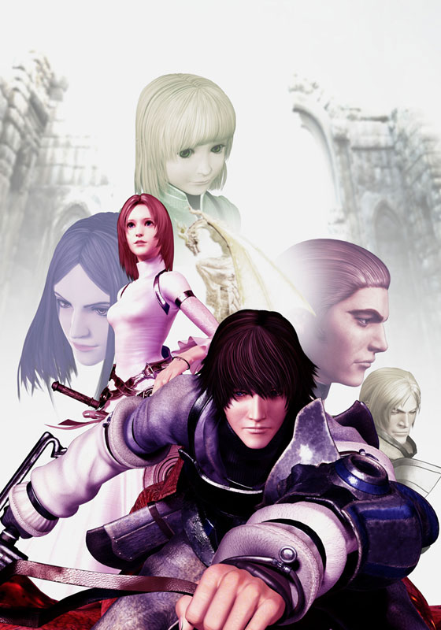
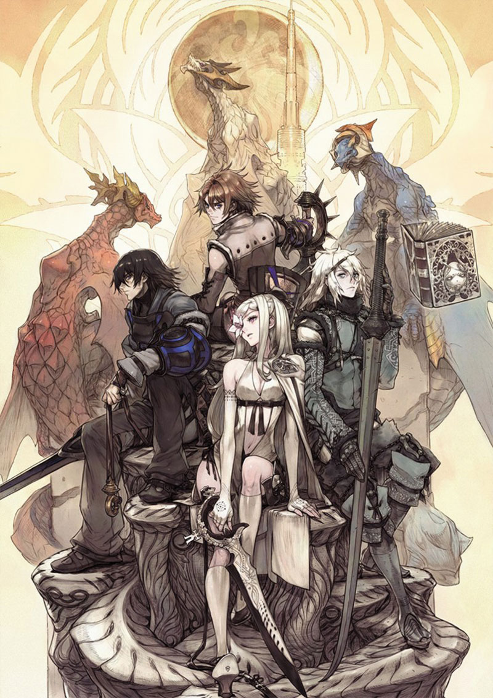
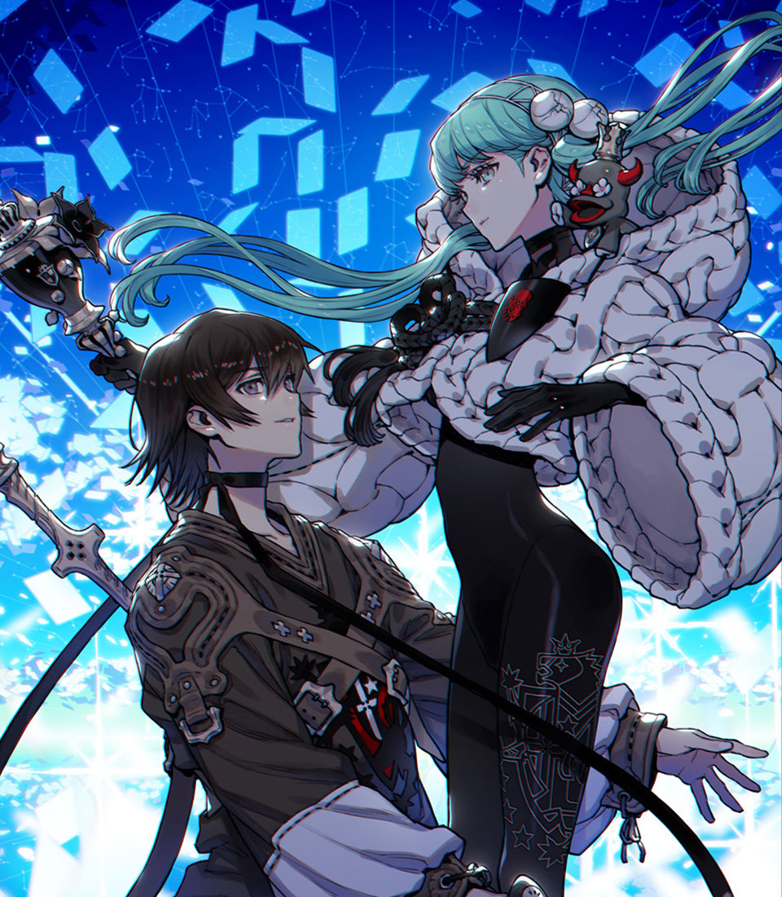
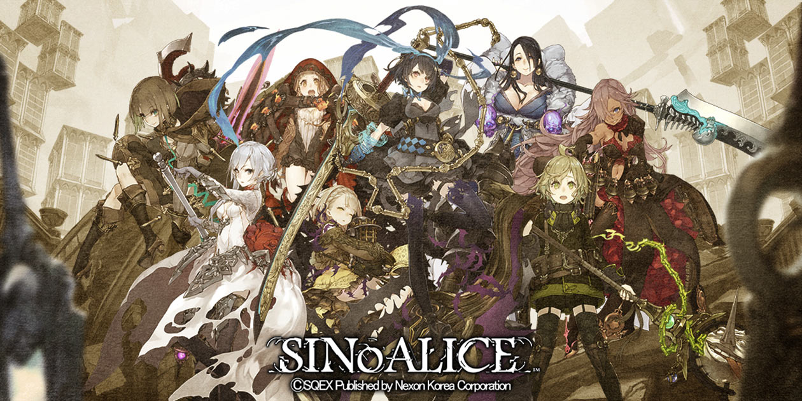

À EXPLORER
Plongez dans ses récits.

Drakengard - 2003
Le premier jeu réalisé par Yoko Taro raconte la guerre d'un prince et de son pacte avec un dragon. L'aventure alterne entre combats au sol et séquences aériennes, dans un royaume marqué par la violence et la trahison. Le récit se distingue par ses personnages tourmentés et ses différentes conclusions. Une des fins ouvre la voie à l'univers de NieR, créant un lien inattendu entre les deux séries. Drakengard pose ainsi plusieurs bases du travail de Yoko Taro : des mondes sombres, des décisions lourdes de conséquences et une narration qui ne suit pas toujours les conventions du jeu de rôle.

NieR et NieR Replicant - 2010 et 2021
Dans NieR, le joueur accompagne un père ou un frère - selon la version - qui cherche un remède pour sauver une jeune fille atteinte d'une maladie mystérieuse. Cette quête personnelle prend progressivement une dimension plus vaste et interroge la mémoire, l'identité et le prix du sacrifice. Le jeu invite à poursuivre l'aventure après une première fin. Les parcours suivants révèlent d'autres éléments de l'histoire et modifient la manière dont on comprend certains personnages. En 2021, NieR Replicant ver.1.22474487139… revisite le jeu original avec des ajustements visuels et de gameplay.

Drakengard 3 - 2013
Préquelle du premier Drakengard, ce jeu suit Zero, une combattante mystérieuse accompagnée de Mikhail, un dragon. Elle part affronter ses sœurs, les Intoners, qui gouvernent le monde. Le jeu associe combats, scènes provocatrices et humour noir. Ses personnages sont souvent excessifs et leurs relations échappent aux représentations habituelles du héros et de ses alliés. Sous ses airs irrévérencieux, l'histoire poursuit les thèmes chers à Yoko Taro : la violence, le pouvoir et les conséquences des choix.

NieR:Automata - 2017
Dans un futur lointain, des androïdes combattent des machines sur une Terre abandonnée par l'humanité. Le joueur suit notamment 2B et 9S, deux membres de l'unité YoRHa, dont la mission semble d'abord clairement définie. Au fil des différentes routes, le jeu remet en question les objectifs des personnages et la signification de leur guerre. Il explore des thèmes comme la conscience, la loyauté et la recherche d'un but. Son système de combat a été développé avec PlatinumGames, tandis que sa bande-son de Keiichi Okabe contribue à l'atmosphère mélancolique du jeu. NieR:Automata a fait connaître l'univers de Yoko Taro à un public international beaucoup plus large.

Voice of Cards - 2021-2022
La trilogie Voice of Cards prend la forme d'un jeu de rôle raconté comme une partie autour d'une table. Les personnages, les lieux et les objets sont représentés par des cartes, tandis qu'un narrateur accompagne l'aventure. Cette présentation sobre donne une place centrale à l'imagination du joueur et à l'art de raconter. Les trois jeux proposent chacun une aventure distincte, dans des univers fantastiques peuplés de héros imparfaits.

D'autres projets
Yoko Taro a également participé à des jeux mobiles, notamment SINoALICE et NieR Re[in]carnation. Il a écrit pour le manga Thou Shalt Not Die et contribué à des projets de scène autour de l'univers YoRHa. Ces créations prolongent son intérêt pour les récits qui se déclinent sur plusieurs supports.